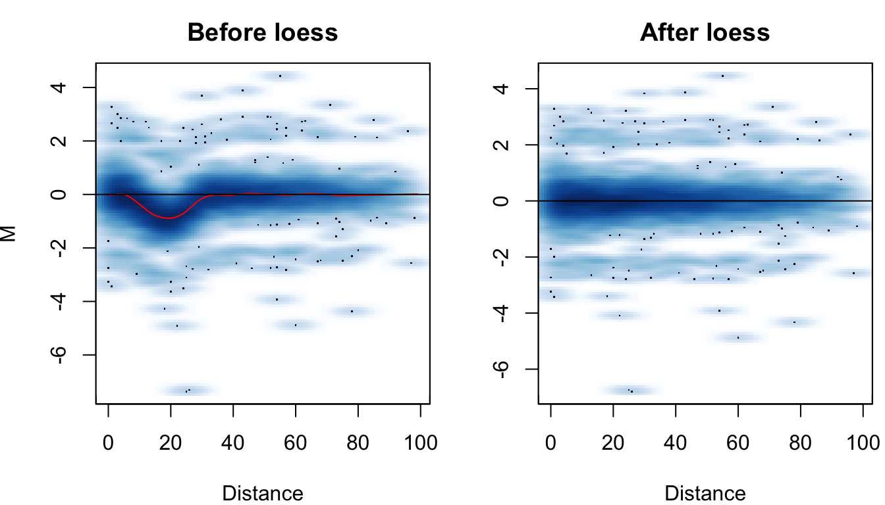

vignettes/HiCcompare-vignette.Rmd
HiCcompare-vignette.RmdHiCcompare provides functions for the joint normalization and detection of differential chromatin interactions between two or multiple Hi-C datasets. HiCcompare operates on processed Hi-C data in the form of chromosome-specific chromatin interaction matrices. It accepts three-column tab-separated text files storing chromatin interaction matrices in a sparse matrix format (see Creating the hic.table object). Functions to convert popular Hi-C data formats (.hic, .cool) to sparse format are available (see ?cooler2sparse). HiCcompare differs from other packages that attempt to compare Hi-C data in that it works on processed data in chromatin interaction matrix format instead of pre-processed sequencing data. In addition, HiCcompare provides a non-parametric method for the joint normalization and removal of biases between two Hi-C datasets for the purpose of comparative analysis. HiCcompare also provides a simple yet robust permutation method for detecting differences between Hi-C datasets.
The hic_loess function outputs normalized chromatin interactions for both matrices ready for the comparative analysis. The hic_compare function performs the comparative analysis and outputs genomic coordinates of pairs of regions detected as differentially interacting, interaction frequencies, the difference and the corresponding permutation p-value.
HiCcompare
Install HiCcompare from Bioconductor.
if (!requireNamespace("BiocManager", quietly=TRUE)) install.packages("BiocManager") BiocManager::install("HiCcompare") library(HiCcompare)
You will need processed Hi-C data in the form of sparse upper triangular matrices or BEDPE files in order to use HiCcompare. Data is available from several sources and two examples for downloading and extracting data are listed below. If you have full Hi-C contact matrices you can convert them to sparse upper triangular format using the full full2sparse function as shown in additional functions
.hic filesHi-C data is available from several sources and in many formats. HiCcompare is built to work with the sparse upper triangular matrix format popularized by the lab of Erez Lieberman-Aiden http://aidenlab.org/data.html. If you already have Hi-C data either in the form of a sparse upper triangular matrix or a full contact matrix you can skip to the Creating the hic.table object section. If you obtain data from the Aiden Lab in the .hic format you will need to first extract the matrices that you wish to compare.
straw software from https://github.com/theaidenlab/straw/wiki and install it.straw to extract a Hi-C sparse upper triangular matrix. An example is below:Say we downloaded the GSE63525_K562_combined_30.hic file from GEO https://www.ncbi.nlm.nih.gov/geo/query/acc.cgi?acc=GSE63525
To extract the raw matrix corresponding to chromosome 22 at 500kb resolution we would use the following command within the terminal
./straw NONE GSE63525_K562_combined_30.hic 22 22 BP 500000 > K562.chr22.500kb.txt
This will extract the matrix from the .hic file and save it to the K562.chr22.500kb.txt text file, in the sparse upper triangular matrix format. See more examples on on how to use straw at https://github.com/theaidenlab/straw/wiki/CPP#running. Straw requires several inputs for the extraction of data from a .hic file.
<NONE/VC/VC_SQRT/KR> <hicFile(s)> <chr1>[:x1:x2] <chr2>[:y1:y2] <BP/FRAG> <binsize>
The first argument is the normalization method. For use in HiCcompare you want the raw data so you should selected NONE. The second argument is the .hic file name. Next is the chromosome numbers of the matrix you want. For an intrachromosomal contact map both should be the same as in the above example. If you want a matrix of interchromosomal interactions you can use different chromosomes i.e. interactions between chromosome 1 and chromosome 2 (Note that HiCcompare is only meant to be used on intrachromosomal interactions at this point in development). The next argument is whether you want basepair or fragment files. For HiCcompare use BP. The final argument is the binsize of the matrix (the resolution). To extract a matrix at a resolution of 1MB enter 10000000. Typical bin sizes are 1MB, 500KB, 100KB, 50KB, 5KB, 1KB. Note that most matrices with resolutions higher than 100KB (i.e. matrices with resolutions of 1KB - 50KB) are typically too sparse (due to insufficient sequencing coverage) for analysis in HiCcompare.
From here we can just import the matrix into R as you would normally for any tab-delimited file.
K562.chr22 <- read.table('K562.chr22.500kb.txt', header=FALSE)
HiCcompare, then proceed to Creating the hic.table object..cool filesThe cooler software, http://cooler.readthedocs.io/en/latest/index.html, allows access to a large collection of Hi-C data. The cooler index ftp://cooler.csail.mit.edu/coolers contains Hi-C data for hg19 and mm9 from many different sources.
.cool files can be read directly into R using the cooler2bedpe function provided by HiCcompare.
dat <- cooler2bedpe(path = "Dixon2012-H1hESC-HindIII-allreps-filtered.1000kb.cool")
Alternatively, data in the .cool format can be import into HiCcompare using the following steps:
cooler from http://cooler.readthedocs.io/en/latest/index.html
.cool file from the cooler index ftp://cooler.csail.mit.edu/coolers.Dixon2012-H1hESC-HindIII-allreps-filtered.1000kb.cool file. See cooler dump --help for data extraction options. To extract the contact matrix we use the following commands in the terminal:cooler dump --join Dixon2012-H1hESC-HindIII-allreps-filtered.1000kb.cool > dixon.hESC.1000kb.txt
hesc1000kb <- read.table("dixon.hESC.1000kb.txt", header = FALSE)
HiCcompare::cooler2sparse function.sparse <- cooler2sparse(hesc1000kb)
hic.table object.HiC-Pro is another tool for processing raw Hi-C data into usable matrix files. HiC-Pro will produce a .matrix file and a .bed file for the data. These .matrix files are in sparse upper triangular format similar to the results of Juicer and the dumped contents of a .hic file, however instead of using the genomic start coordinates for the first two columns of the sparse matrix they use an ID number. The .bed file contains the mappings for each of these IDs to their genomic coordinates. HiCcompare includes a function to convert the results of HiC-Pro into a usable format for analysis in HiCcompare. When using data from HiC-Pro it is important to use the raw .matrix files and NOT the iced .matrix files. The iced .matrix files have already had ICE normalization applied to them and are not suitable for entry into HiCcompare. Here we convert HiC-Pro data for input into HiCcompare:
# read in files mat <- read.table("hic_1000000.matrix") bed <- read.table("hic_1000000_abs.bed") # convert to BEDPE dat <- hicpro2bedpe(mat, bed) # NOTE: hicpro2bedpe returns a list of lists. The first list, dat$cis, contains the intrachromosomal contact matrices # NOTE: dat$trans contains the interchromosomal contact matrix which is not used in HiCcompare.
See the help using ?hicpro2bedpe for more details.
Before you start a HiCcompare analysis, you may want to detect CNV and exclude these regions along with any other regions known to exhibit changes or undesirable sequencing characteristics which could cause false positives. HiCcompare provides a function to perform a CNV detection analysis utilizing the QDNAseq R package. You will need to have your Hi-C data in .bam files. This can be accomplished by downloading the raw sequencing results and aligning them using one of the many Hi-C processing pipelines. Once you have .bam files place them in a specified folder and you can then run get_CNV. Make sure to specify the bin size you will be using in kilobase pairs. The bin size should be the same as the resolution of the Hi-C data that will be used in the HiCcompare analysis. The CNV.level option will allow you to choose which level of CNV you would like to exclude. The CNV calls are defined as -2 = deletion, -1 = loss, 0 = normal, 1 = gain, 2 = amplification. In order to exclude amplifications and deletions set CNV.level = 2. To exclude any amount of CNV set CNV.level = 1.
cnv <- get_CNV(path2bam = 'path/to/bamfiles', out.file = 'path/to/bamfiles/outfile', bin.size = 1000, genome = 'hg19', CNV.level = 2)
This function will run the CNV detection steps provided in QDNAseq and export a .txt file containing the copy number calls and a .bed file containing the regions detected at or above the chosen CNV level. It will also return a data.frame containing the regions at or above the chosen CNV level. It is recommended to exclude regions with scores of -2 or 2, however this decision is left up to the user.
You may want to exclude the regions with CNV along with blacklisted regions from any further analysis. HiCcompare has the ENCODE blacklists for hg19 and hg38 included (available using data("hg19_blacklist") or data("hg38_blacklist")). We can now create a data.frame (or GenomicRanges object) containing all of the regions we want to exclude from any further analysis.
data('hg19_blacklist') # combine cnv excluded regions with blacklist regions exclude <- cbind(cnv, hg19_blacklist)
Now that we have a data.frame containing the regions to be excluded we just simply set the exclude.regions options in the create.hic.table function to the exclude data.frame.
hic.table objectA sparse matrix format represents a relatively compact and human-readable way to store pair-wise interactions. It is a tab-delimited text format containing three columns: “region1” - a start coordinate (in bp) of the first region, “region2” a start coordinate of the second region, and “IF” - the interaction frequency between them (IFs). Zero IFs are dropped (hence, the sparse format). Since the full matrix of chromatin interactions is symmetric, only the upper triangular portion, including the diagonal, is stored.
If you have two full Hi-C contact matrices you can convert them to sparse upper triangular matrices using the HiCcompare::full2sparse function. Once you have two sparse matrices you are ready to create a hic.table object. This will be illustrated using the included sparse matrices at 500kb resolution for chromosome 22 from the HMEC and NHEK cell lines.
## region1 region2 IF
## 1 16000000 16000000 5
## 2 16000000 16500000 2
## 3 16500000 16500000 297
## 4 16000000 17000000 5
## 5 16500000 17000000 92
## 6 17000000 17000000 5690Now that we have 2 sparse upper triangular matrices we can create the hic.table object. create.hic.table requires the input of 2 sparse matrices and the chromosome name.
# create the `hic.table` object chr22.table <- create.hic.table(HMEC.chr22, NHEK.chr22, chr = 'chr22') head(chr22.table)
## chr1 start1 end1 chr2 start2 end2 IF1 IF2 D M
## 1: chr22 16000000 16500000 chr22 16000000 16500000 5 5.203323 0 0.05750528
## 2: chr22 16000000 16500000 chr22 16500000 17000000 2 8.672206 1 2.11639897
## 3: chr22 16500000 17000000 chr22 16500000 17000000 297 480.440193 0 0.69389392
## 4: chr22 16000000 16500000 chr22 17000000 17500000 5 14.742750 2 1.56000562
## 5: chr22 16500000 17000000 chr22 17000000 17500000 92 277.510581 1 1.59283701
## 6: chr22 17000000 17500000 chr22 17000000 17500000 5690 9435.359752 0 0.72964887By default, all regions for the data entered are used as is. It may be desirable to exclude certain regions from any further analysis because they contain CNV or are overlapping blacklisted regions with known sequencing issues. To exclude the CNV and blacklisted regions we defined above, create the hic.table object as follows.
chr22.table <- create.hic.table(HMEC.chr22, NHEK.chr22, chr = 'chr22', exclude.regions = exclude, exclude.overlap = 0.2)
The exclude.overlap option controls the percentage overlap required with the regions listed in your data in order to be exclude. CNV regions should in the same resolution and bins as your data so they will overlap any of your regions by 100%. Blacklisted regions tend to be small and may only overlap your regions by a few basepairs. If you want any amount of overlap to result in exclusion set exclude.overlap = 0. To require 100% overlap before exclusion set exclude.overlap = 1. By default this option will exclude regions with 20% or more overlap.
We can also list multiple hic.tables in order to utilize parallel computing. First we create another hic.table as was done above. Then we combine these two hic.tables into a list.
# create list of `hic.table` objects data("HMEC.chr10") data("NHEK.chr10") # create the `hic.table` object chr10.table <- create.hic.table(HMEC.chr10, NHEK.chr10, chr = 'chr10') hic.list <- list(chr10.table, chr22.table) head(hic.list)
## [[1]]
## chr1 start1 end1 chr2 start2 end2 IF1 IF2 D M
## 1: chr10 0 500000 chr10 0 500000 11160 1.491828e+04 0 0.4187441
## 2: chr10 0 500000 chr10 500000 1000000 3339 4.766792e+03 1 0.5136024
## 3: chr10 500000 1000000 chr10 500000 1000000 15871 1.998235e+04 0 0.3323333
## 4: chr10 0 500000 chr10 1000000 1500000 1064 6.501731e+02 2 -0.7106025
## 5: chr10 500000 1000000 chr10 1000000 1500000 2963 2.097443e+03 1 -0.4984269
## ---
## 35366: chr10 134000000 134500000 chr10 135000000 135500000 1810 1.273570e+03 2 -0.5071112
## 35367: chr10 134500000 135000000 chr10 135000000 135500000 1971 3.634653e+03 1 0.8828898
## 35368: chr10 135000000 135500000 chr10 135000000 135500000 16716 1.188368e+04 0 -0.4922479
## 35369: chr10 134000000 134500000 chr10 135500000 136000000 1 6.865608e-01 3 -0.5425406
## 35370: chr10 135000000 135500000 chr10 135500000 136000000 4 3.432804e+00 1 -0.2206125
##
## [[2]]
## chr1 start1 end1 chr2 start2 end2 IF1 IF2 D M
## 1: chr22 16000000 16500000 chr22 16000000 16500000 5 5.203323 0 0.05750528
## 2: chr22 16000000 16500000 chr22 16500000 17000000 2 8.672206 1 2.11639897
## 3: chr22 16500000 17000000 chr22 16500000 17000000 297 480.440193 0 0.69389392
## 4: chr22 16000000 16500000 chr22 17000000 17500000 5 14.742750 2 1.56000562
## 5: chr22 16500000 17000000 chr22 17000000 17500000 92 277.510581 1 1.59283701
## ---
## 2479: chr22 49000000 49500000 chr22 51000000 51500000 21 54.634896 4 1.37943338
## 2480: chr22 49500000 50000000 chr22 51000000 51500000 35 71.112086 3 1.02273986
## 2481: chr22 50000000 50500000 chr22 51000000 51500000 394 339.083241 2 -0.21655615
## 2482: chr22 50500000 51000000 chr22 51000000 51500000 4066 2741.284207 1 -0.56875831
## 2483: chr22 51000000 51500000 chr22 51000000 51500000 9916 7132.021930 0 -0.47544713The hic.table object contains a summary of the differences between the two matrices. “IF1” and “IF2” correspond to interaction frequencies in the first and second matrices, “D” is the unit distance (length of each unit is equivalent to the resolution of the data, e.g., 500kb), “M” is the \(log_2(IF2)-log_2(IF1)\) difference.
A hic.table object can also be created using data in the 7 column BEDPE format. An example of BEDPE data for the HMEC dataset used above is shown below.
## chr1 start1 end1 chr2 start2 end2 IF1
## 1: chr22 16000000 16500000 chr22 16000000 16500000 5
## 2: chr22 16000000 16500000 chr22 16500000 17000000 2
## 3: chr22 16500000 17000000 chr22 16500000 17000000 297
## 4: chr22 16000000 16500000 chr22 17000000 17500000 5
## 5: chr22 16500000 17000000 chr22 17000000 17500000 92
## 6: chr22 17000000 17500000 chr22 17000000 17500000 5690To create a hic.table object using BEDPE data is very similar to using data in the sparse upper triangular format.
bed.hic.tab <- create.hic.table(HMEC.chr22_BEDPE, NHEK.chr22_BEDPE) head(bed.hic.tab)
## chr1 start1 end1 chr2 start2 end2 IF1 IF2 D M
## 1: chr22 16000000 16500000 chr22 16000000 16500000 5 5.203323 0 0.05750528
## 2: chr22 16000000 16500000 chr22 16500000 17000000 2 8.672206 1 2.11639897
## 3: chr22 16500000 17000000 chr22 16500000 17000000 297 480.440193 0 0.69389392
## 4: chr22 16000000 16500000 chr22 17000000 17500000 5 14.742750 2 1.56000562
## 5: chr22 16500000 17000000 chr22 17000000 17500000 92 277.510581 1 1.59283701
## 6: chr22 17000000 17500000 chr22 17000000 17500000 5690 9435.359752 0 0.72964887If you are using data from HiC-Pro you can create a hic.table object as follows.
# first dataset mat1 <- read.table("hic1_1000000.matrix") bed1 <- read.table("hic1_1000000_abs.bed") dat1 <- hicpro2bedpe(mat, bed) dat1 <- dat1$cis # extract intrachromosomal matrices # second dataset mat2 <- read.table("hic2_1000000.matrix") bed2 <- read.table("hic2_1000000_abs.bed") dat2 <- hicpro2bedpe(mat, bed) dat2 <- dat2$cis # extract intrachromosomal matrices # for chr1 hic.table <- create.hic.table(dat1[[1]], dat2[[1]]) # for all chromosomes hic.list <- mapply(create.hic.table, dat1, dat2, SIMPLIFY = FALSE)
A hic.table can also be created using an InteractionSet object. Simply enter two InteractionSets representing two Hi-C matrices into the create.hic.table function and they will be converted to the proper format. See the InteractionSet vignette for creating InteractionSet objects here
## GInteractions object with 6 interactions and 1 metadata column:
## seqnames1 ranges1 seqnames2 ranges2 | IF
## <Rle> <IRanges> <Rle> <IRanges> | <numeric>
## [1] chr22 16000000-16499999 --- chr22 16000000-16499999 | 5
## [2] chr22 16000000-16499999 --- chr22 16500000-16999999 | 2
## [3] chr22 16500000-16999999 --- chr22 16500000-16999999 | 297
## [4] chr22 16000000-16499999 --- chr22 17000000-17499999 | 5
## [5] chr22 16500000-16999999 --- chr22 17000000-17499999 | 92
## [6] chr22 17000000-17499999 --- chr22 17000000-17499999 | 5690
## -------
## regions: 71 ranges and 0 metadata columns
## seqinfo: 1 sequence from an unspecified genome; no seqlengthsIS.hic.tab <- create.hic.table(hmec.IS, nhek.IS)
To shorten computational time, or if one is only interested in a subsection of a Hi-C matrix, one may wish to use a subset of the hic.table object. Use the subset.dist or subset.index options, see help for the create.hic.table function.
If you are performing your HiCcompare analysis on the entire genome you can perform total sum scaling on the data before performing loess normalization. This requires the use of a list of hic.table objects, one for each chromosome. Additionally, when you create these hic.table objects you must set scale = FALSE. Once you have your list of hic.table objects you can then perform total sum scaling.
hic.list <- total_sum(hic.list)
It is recommended to use total sum scaling when performing a HiCcompare analysis on the entire genome. If you are only using data for a single chromosome then total sum scaling should be equivalent to the scale option in the create.hic.table function.
Now that you have created a hic.table object you can jointly normalize your two Hi-C matrices. The hic_loess function has many options and can accept a single hic.table or a list of hic.tables. If for example you wish to perform joint normalization for every chromosome on two cell lines while utilizing parallel computing you can create a list containing the hic.tables for each chromosome.
To change the degree of the polynomial for the loess joint normalization you can utilize the degree option, default is 1 (linear regression). A user-defined span, or the amount of data used to build the loess model, can also be set with the span option. However if span = NA (the default) the automatic smoothing parameter selection process will run and determine the optimal span for the data. The type of selection process can be changed using the loess.criterion option. Available settings are gcv (the default) for generalized cross-validation or aicc for Akaike information criterion. The loess automatic smoothing parameter selection uses a customized version of the fANCOVA::loess.as function. For more information on parameter selection please see the fANCOVA reference manual. It is recommended to use the default settings. If you have already run hic_loess on a dataset and know the span or would like to use a specific span then manually setting the span to a value can significantly reduce computation time especially for high resolution data.
hic_loess can utilize the BiocParallel package to perform parallel computing and lower computation time. The parallel option (FALSE by default) will only speed up computation if a list of hic.tables is entered into the function, i.e., it parallelizes processing of several chromosome-specific matrices. This is useful for performing joint normalization for every chromosome between two Hi-C datasets. For more information on BiocParallel see the reference manual here.
The basis of HiCcompare rests on the novel concept termed the MD plot. The MD plot is similar to the MA plot or the Bland-Altman plot. \(M\) is the log2 difference between the interaction frequencies from the two datasets. \(D\) is the unit distance between the two interacting regions. Loess is performed on the data after it is represented in the MD coordinate system. To visualize the MD plot the Plot option can be set to TRUE.
If you wish to detect differences between the two Hi-C datasets immediately following joint normalization you can set the check.differences option to TRUE. However, if you only want to jointly normalize the data for now keep this option set to FALSE. The difference detection process will be covered in the next section.
# Jointly normalize data for a single chromosome hic.table <- hic_loess(chr22.table, Plot = TRUE, Plot.smooth = FALSE)
## Span for loess: 0.219052588777294## GCV for loess: 0.000118686898199309## AIC for loess: -0.212037314500057## `geom_smooth()` using method = 'gam' and formula 'y ~ s(x, bs = "cs")'
## `geom_smooth()` using method = 'gam' and formula 'y ~ s(x, bs = "cs")'| chr1 | start1 | end1 | chr2 | start2 | end2 | IF1 | IF2 | D | M | adj.IF1 | adj.IF2 | adj.M | mc | A |
|---|---|---|---|---|---|---|---|---|---|---|---|---|---|---|
| chr22 | 16000000 | 16500000 | chr22 | 16000000 | 16500000 | 5 | 5.203323 | 0 | 0.0575053 | 5.103586 | 5.097713 | -0.0016611 | 0.0591664 | 5.100650 |
| chr22 | 16000000 | 16500000 | chr22 | 16500000 | 17000000 | 2 | 8.672206 | 1 | 2.1163990 | 2.079392 | 8.341096 | 2.0040748 | 0.1123242 | 5.210244 |
| chr22 | 16500000 | 17000000 | chr22 | 16500000 | 17000000 | 297 | 480.440193 | 0 | 0.6938939 | 303.153008 | 470.688840 | 0.6347275 | 0.0591664 | 386.920924 |
| chr22 | 16000000 | 16500000 | chr22 | 17000000 | 17500000 | 5 | 14.742750 | 2 | 1.5600056 | 5.294664 | 13.922271 | 1.3947836 | 0.1652220 | 9.608468 |
| chr22 | 16500000 | 17000000 | chr22 | 17000000 | 17500000 | 92 | 277.510581 | 1 | 1.5928370 | 95.652053 | 266.915059 | 1.4805129 | 0.1123242 | 181.283556 |
| chr22 | 17000000 | 17500000 | chr22 | 17000000 | 17500000 | 5690 | 9435.359752 | 0 | 0.7296489 | 5807.880851 | 9243.853028 | 0.6704825 | 0.0591664 | 7525.866939 |
# Multiple hic.tables can be processed in parallel by entering a list of hic.tables hic.list <- hic_loess(hic.list, parallel = TRUE)
The hic_loess joint normalization function extends the hic.table with the adjusted interaction frequencies, adjusted “M”, the “mc” correction factor, and the average expression “A”.
the MD plot is used to represent the differences \(M\) between two normalized datasets at a distance \(D\). Normalized \(M\) values are centered around 0 and the distribution at each distance remains fairly consistent. The \(M\) values are approximately normally distributed. \(M\) values are converted to Z-scores using the standard approach:
\[ Z_i = \frac{M_i - \bar{M}}{\sigma_M} \] where \(\bar{M}\) is the mean value of all \(M\)’s on the chromosome and \(\sigma_M\) is the standard deviation of all \(M\) values on the chromosome and \(i\) is the \(i\)th interacting pair on the chromosome.
During Z-score conversion the average expression of each interacting pair is considered. Due to the nature of \(M\), a difference represented by an interacting pair with IFs 1 and 10 is equivalent to an interacting pair of IFs 10 and 100 with both differences having an \(M\) value of 3.32. However the average expression of these two differences is 5.5 and 55, respectively. Differences with higher average expression are more trustworthy than those with low average expression due to the fact that a relatively small difference on the raw scale can lead to a large log2 fold change. Additionally since the IFs represent Hi-C sequencing reads, lower average numbers of reads are also less trustworthy. Thus we filter out differences with low average expression before calculating Z-scores when average expression (\(A\)) is less than a user set quantile (typically 5-20%) or a user set specific value of \(A\). The Z-scores can then be converted to p-values using the standard normal distribution.
To determine how to filter your data you can use the filter_params() function. This will produce a plot of the Matthews Correlation Coefficient (MCC) vs. the A minimum value filtered out. This plot should help you determine a reasonable value to set your filtering parameter in hic_compare. You may need to adjust the numChanges option and the FC option depending on the resolution of the data and how noisy it is.
Here we check the filtering:
filter_params(hic.table)
Difference detection can be performed using the hic_compare() function. Before difference detection you will need to decide how you would like to filter out interactions with low average expression. You can filter based on a specific value of A. Once you have a normalized hic.table or list of hic.tables detect differences with an A filter as follows:
hic.table <- hic_compare(hic.table, A.min = 15, adjust.dist = TRUE, p.method = 'fdr', Plot = TRUE)
## Filtering out interactions with A < 15If you leave the A.min = NA then the 10th percentile of A will be calculated and used for filtering by default. The resulting table will display the results as shown below:
| chr1 | start1 | end1 | chr2 | start2 | end2 | IF1 | IF2 | D | M | adj.IF1 | adj.IF2 | adj.M | mc | A | Z | p.value | p.adj |
|---|---|---|---|---|---|---|---|---|---|---|---|---|---|---|---|---|---|
| chr22 | 16000000 | 16500000 | chr22 | 16000000 | 16500000 | 5 | 5.203323 | 0 | 0.0575053 | 5.103586 | 5.097713 | -0.0016611 | 0.0591664 | 5.10065 | NA | 1.0000000 | 1.0000000 |
| chr22 | 16500000 | 17000000 | chr22 | 16500000 | 17000000 | 297 | 480.440193 | 0 | 0.6938939 | 303.153008 | 470.688840 | 0.6347275 | 0.0591664 | 386.92092 | 1.2636692 | 0.2063488 | 0.8469872 |
| chr22 | 17000000 | 17500000 | chr22 | 17000000 | 17500000 | 5690 | 9435.359752 | 0 | 0.7296489 | 5807.880851 | 9243.853028 | 0.6704825 | 0.0591664 | 7525.86694 | 1.3334594 | 0.1823811 | 0.8469872 |
| chr22 | 17500000 | 18000000 | chr22 | 17500000 | 18000000 | 17641 | 23887.590475 | 0 | 0.4373290 | 18006.472072 | 23402.751072 | 0.3781626 | 0.0591664 | 20704.61157 | 0.7628794 | 0.4455353 | 0.8469872 |
| chr22 | 18000000 | 18500000 | chr22 | 18000000 | 18500000 | 27241 | 22369.087265 | 0 | -0.2842733 | 27805.357163 | 21915.068475 | -0.3434397 | 0.0591664 | 24860.21282 | -0.6456180 | 0.5185268 | 0.8469872 |
| chr22 | 18500000 | 19000000 | chr22 | 18500000 | 19000000 | 10592 | 8412.039485 | 0 | -0.3324475 | 10811.436550 | 8241.302792 | -0.3916139 | 0.0591664 | 9526.36967 | -0.7396494 | 0.4595127 | 0.8469872 |
Where Z is the Z-score calculated for the interaction (Z-scores with NA values result from filtering based on A), p.value is the un-adjusted p-value based on the standard normal distribution, and p.adj is the p-value after the multiple testing correction specified was applied.
HiCcompare results to InteractionSet objectsIf after running hic_loess or hic_compare on your data you wish to perform additional analyses which require the GRanges object class you can convert the results using the make_InteractionSet function. This function will produce an InteractionSet object with the genomic ranges contained in the hic.table along with several metadata files containing the additional information produced by hic_loess or hic_compare.
IntSet <- make_InteractionSet(hic.table)
HiCcompare includes functions for simulating Hi-C data. The hic_simulate function allows you to simulate two Hi-C matrices with added bias and true differences at a specified fold change. As an example we will simulate two matrices with 250 true differences added at a fold change of 4.
number_of_unitdistances <- 100 # The dimensions of the square matrix to be simualted number_of_changes <- 250 # How many cells in the matrix will have changes i.range <- sample(1:number_of_unitdistances, number_of_changes, replace = TRUE) # Indexes of cells to have controlled changes j.range <- sample(1:number_of_unitdistances, number_of_changes, replace = TRUE) # Indexes of cells to have controlled changes sim_results <- hic_simulate(nrow = number_of_unitdistances, medianIF = 50000, sdIF = 14000, powerlaw.alpha = 1.8, fold.change = 4, i.range = i.range, j.range = j.range, Plot = TRUE, alpha = 0.1)
## Span for loess: 0.212770648399734## GCV for loess: 0.000115595383786921## AIC for loess: 0.40401939084367## Filtering out interactions with A < 99
## True Positives: 211 Total added differences: 213 True Negatives: 4470## TPR: 0.990610328638498## SPC: 0.986972841686907The results of the simulation are saved in a list.
names(sim_results)
## [1] "TPR" "SPC" "pvals" "hic.table" "true.diff" "truth" "sim.table"TPR is the true positive rate, SPC is the specificity, pvals is a vector of the p-values for every cell in the matrices, hic.table is the resulting hic.table object after hic_loess and hic_compare have been applied to the simulated data, true.diff is a table for the cells that had the specified fold change applied to them, truth is a vector of 0’s and 1’s indicating if a cell had a true difference applied - this is useful for input into ROC packages, sim.table is the simulated data in a hic.table object before being scaled, normalized, and analyzed for differences.
The sim_matrix function will produce two simulated Hi-C matrices without performing any analysis.
sims <- sim_matrix(nrow = number_of_unitdistances, medianIF = 50000, sdIF = 14000, powerlaw.alpha = 1.8, fold.change = 4, i.range = i.range, j.range = j.range)
HiCcompare contains some additional functions that may be useful.
If you do not choose to show the MD plots when you initially run hic_loess or hic_compare you can use the MD.plot1 or MD.plot2 functions. MD.plot1 will create a side by side MD plot showing before and after loess normalization. Enter your original M and D vectors along with the M correction factor, mc, calculated by hic_loess. The smooth option controls if the plot is plotted using smoothScatter or as a ggplot2 scatter plot.
MD.plot1(M = hic.table$M, D = hic.table$D, mc = hic.table$mc, smooth = TRUE)
MD.plot2 will create a standard MD plot with optional coloring based on p-value. Just enter an M and D vector and a p-value vector if desired.
# no p-value coloring MD.plot2(M = hic.table$adj.M, D = hic.table$D, smooth = FALSE)
# p-value coloring MD.plot2(M = hic.table$adj.M, D = hic.table$D, hic.table$p.value, smooth = FALSE)
There are two matrix transformation functions included. sparse2full will transform a sparse upper triangular matrix to a full Hi-C matrix. full2sparse will transform a full Hi-C matrix to sparse upper triangular format.
full.NHEK <- sparse2full(NHEK.chr22)
## Matrix dimensions: 71x71full.NHEK[1:5, 1:5]
## 1.6e+07 16500000 1.7e+07 17500000 1.8e+07
## 1.6e+07 6 10 17 13 1
## 16500000 10 554 320 118 23
## 1.7e+07 17 320 10880 2922 576
## 17500000 13 118 2922 27545 3693
## 1.8e+07 1 23 576 3693 25794sparse.NHEK <- full2sparse(full.NHEK) head(sparse.NHEK)
## region1 region2 IF
## 1: 16000000 16000000 6
## 2: 16000000 16500000 10
## 3: 16500000 16500000 554
## 4: 16000000 17000000 17
## 5: 16500000 17000000 320
## 6: 17000000 17000000 10880KRnorm will perform Knight-Ruiz normalization on a Hi-C matrix. Just enter the full Hi-C matrix to be normalized.
KR.NHEK <- KRnorm(full.NHEK)
SCN will perform Sequential Component Normalization on a Hi-C matrix. Just enter the full Hi-C matrix to be normalized.
SCN.NHEK <- SCN(full.NHEK)
MA_norm will perform MA normalization on a hic.table object.
result <- MA_norm(hic.table, Plot = TRUE)
Below is an example script for using HiCcompare on a computing cluster. The data was concatenated into a single sparse matrix for each group, containing information for all the chromosomes.
library(HiCcompare) library(BiocParallel) args = commandArgs(trailingOnly=TRUE) dat1 <- read.table(args[1], header=FALSE, col.names=c("chr1", "start1", "end1", "chr2", "start2", "end2", "IF")) dat2 <- read.table(args[2], header=FALSE, col.names=c("chr1", "start1", "end1", "chr2", "start2", "end2", "IF")) dat1 <- dat1[dat1$chr1==dat1$chr2, ] dat2 <- dat2[dat2$chr1==dat2$chr2, ] dat1 <- split(dat1, dat1$chr1) dat2 <- split(dat2, dat2$chr1) hic.list <- mapply(create.hic.table, dat1, dat2, SIMPLIFY = FALSE, scale=FALSE) hic.list <- total_sum(hic.list) register(MulticoreParam(workers = 10), default = TRUE) hic.list <- hic_loess(hic.list, Plot=TRUE, parallel=TRUE) hic.list <- hic_compare(hic.list, A.min = NA, adjust.dist = TRUE, p.method = 'fdr', Plot = TRUE, parallel=TRUE) hic.list <- do.call(rbind, hic.list) hic.list <- hic.list[hic.list$p.adj<0.05,] write.table(hic.list, args[3])
The above can be saved as an R script and then submitted to a cluster using the following submission script.
#!/bin/sh
# Sun Grid Engine options (lines prefixed with #$)
#$ -cwd
#$ -N HiCCompare
#$ -l h_rt=06:00:00
#$ -l h_vmem=32G
#$ -pe sharedmem 11
#$ -V
Rscript 01_HiCcompare.R $1 $2 $3qsub 01_launch_HiCcompare.sh dat1.1000000.pixels.tsv dat2.1000000.pixels.tsv hiccompare_1Mb.tsvCredit to Ilya Flyamer (@Phlya on GitHub) for this example of using HiCcompare on a cluster.